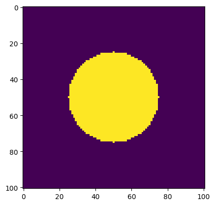
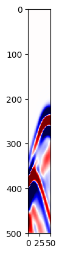
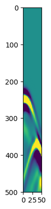

Exercise 7 : Waveform inversion
With waveform inversion we try to find the velocity model for which the modeled data optimally fits the observed data in a least-squares sense. Mathematically, we try to solve the following optimization problem:
where is the modeling operator and is the observed data.
Contents: - Camambert model - Modeling - Optimization - Inversion
To illustrate some key properties of the waveform inversion problem, we are going to conduct some experiments on the famous 'Camambert' model.
Camambert model:
The Camambert model consists of a circular perturbation, , superimposed on a homogeneous medium, , with velocity 2500 m/s.
using JUDI.TimeModeling, JUDI.SLIM_optim, PyPlot, SeisIO
# Velocity model
# number of gridpoints
n = (101, 101)
# Grid spacing
d = (10.0, 10.0)
# Origin
o = (0., 0.)
x = zeros(n)
z = zeros(n)
for i in 0:100
x[i+1, :] = i*10
z[:, i+1] = i*10
end
#
vp = 2.5f0 * ones(Float32, n)
vp[find(sqrt.((x-500).^2 +(z-500).^2) .<=250)]=3.0f0
m = 1f0./vp.^2f0
#
v0 = 2.5f0 * ones(Float32, n)
m0 = 1f0./v0.^2f0
imshow(m)

PyObject <matplotlib.image.AxesImage object at 0x7fee6c4dca20>
# Set up model structure w/ squared slowness
model0 = Model(n, d, o, m0)
model = Model(n, d, o, m)
JUDI.TimeModeling.Model((101, 101), (10.0, 10.0), (0.0, 0.0), 40, Float32[0.16 0.16 … 0.16 0.16; 0.16 0.16 … 0.16 0.16; … ; 0.16 0.16 … 0.16 0.16; 0.16 0.16 … 0.16 0.16], 1)
Source geometry
# Sources
nsrc = 10
xsrc = convertToCell(linspace(10f0, 990f0, nsrc))
ysrc = convertToCell(linspace(0f0, 0f0, nsrc))
zsrc = convertToCell(linspace(10f0, 10f0, nsrc))
# source sampling and number of time steps
timeS = 1000f0
dtS = 2f0
# Set up source structure
srcGeometry = Geometry(xsrc,ysrc,zsrc; dt=dtS, t=timeS)
JUDI.TimeModeling.GeometryIC(Any[10.0, 118.889, 227.778, 336.667, 445.556, 554.444, 663.333, 772.222, 881.111, 990.0], Any[0.0, 0.0, 0.0, 0.0, 0.0, 0.0, 0.0, 0.0, 0.0, 0.0], Any[10.0, 10.0, 10.0, 10.0, 10.0, 10.0, 10.0, 10.0, 10.0, 10.0], Any[2.0, 2.0, 2.0, 2.0, 2.0, 2.0, 2.0, 2.0, 2.0, 2.0], Any[501, 501, 501, 501, 501, 501, 501, 501, 501, 501], Any[1000.0, 1000.0, 1000.0, 1000.0, 1000.0, 1000.0, 1000.0, 1000.0, 1000.0, 1000.0])
Receiver geometry
# Receievers reflection
nrec = 50f0
xrec = linspace(10f0, 990f0, nrec)
yrec = 0f0
zrec = linspace(10f0, 10f0, nrec)
# source sampling and number of time steps
timeR = 1000f0
dtR = 2f0
# Set up receiver structure
recGeometry_reflection = Geometry(xrec,yrec,zrec;dt=dtR,t=timeR, nsrc=nsrc)
# Receievers transmission
nrec = 50f0
xrec = linspace(10f0, 990f0, nrec)
yrec = 0f0
zrec = linspace(990f0, 990f0, nrec)
# source sampling and number of time steps
timeR = 1000f0
dtR = 2f0
# Set up receiver structure
recGeometry_transmission = Geometry(xrec,yrec,zrec;dt=dtR,t=timeR, nsrc=nsrc)
JUDI.TimeModeling.GeometryIC(Any[10.0f0:20.0f0:990.0f0, 10.0f0:20.0f0:990.0f0, 10.0f0:20.0f0:990.0f0, 10.0f0:20.0f0:990.0f0, 10.0f0:20.0f0:990.0f0, 10.0f0:20.0f0:990.0f0, 10.0f0:20.0f0:990.0f0, 10.0f0:20.0f0:990.0f0, 10.0f0:20.0f0:990.0f0, 10.0f0:20.0f0:990.0f0], Any[0.0, 0.0, 0.0, 0.0, 0.0, 0.0, 0.0, 0.0, 0.0, 0.0], Any[990.0f0:0.0f0:990.0f0, 990.0f0:0.0f0:990.0f0, 990.0f0:0.0f0:990.0f0, 990.0f0:0.0f0:990.0f0, 990.0f0:0.0f0:990.0f0, 990.0f0:0.0f0:990.0f0, 990.0f0:0.0f0:990.0f0, 990.0f0:0.0f0:990.0f0, 990.0f0:0.0f0:990.0f0, 990.0f0:0.0f0:990.0f0], Any[2.0, 2.0, 2.0, 2.0, 2.0, 2.0, 2.0, 2.0, 2.0, 2.0], Any[501, 501, 501, 501, 501, 501, 501, 501, 501, 501], Any[1000.0, 1000.0, 1000.0, 1000.0, 1000.0, 1000.0, 1000.0, 1000.0, 1000.0, 1000.0])
Optimization
lbfgs (minConf_PQN here) can be used to solve optimization problems of the form:
$\min_{\mathbf{m}}\quad \phi(\mathbf{m})$
The method needs a function that calculates the misfit and gradient. The gradient of the LS misfit:
$\phi(\mathbf{m}) = \frac{1}{2}|F(\mathbf{m}) {-} \mathbf{d}|_2^2$
is given by
$\nabla\phi(\mathbf{m}) = J(\mathbf{m})^*(F(\mathbf{m}) {-} \mathbf{d})$
where $J(\mathbf{m})$ is the Jacobian matrix of $F$ and $^*# denotes the complex-conjugate-transpose (' in Julia). The Jacobian is provided by the modeling operator: J = judiJacobian(F, q)
Write a julia function misfit(m) that returns the value of the misfit and the gradient for the given model m.
minConf_SQP that function as an input
Inversion
In the following experiments we will vary acquisition setup to emulatate a reflection and a transmission experiment:
Reflection setup: reflection_data.segy.
Transmission setup:transmission_data.segy.
- define the function-handle as described above.
- define an initial model m0 by converting v0 to the proper units.
- use lbfgs| for a small amount of iterations (10, say).
Compare the results of both experiments in terms of:
- reconstruction
- data-fit
In order to obtain nice conergence use the following bound constraint
Bound projection
ProjBound(x) = boundproject(x, maximum(m), .9*minimum(m))
Setup
# To setup the operator in for example the reflection case
# setup wavelet
f0 = 0.01f0 # 5 Hz wavelet
wavelet = ricker_wavelet(timeS, dtS, f0)
q = judiVector(srcGeometry, wavelet)
# Set up info structure for linear operators
ntComp = get_computational_nt(srcGeometry, recGeometry_reflection, model)
info = Info(prod(n), nsrc, ntComp)
JUDI.TimeModeling.Info(10201, 10, Any[596, 596, 596, 596, 596, 596, 596, 596, 596, 596])
F_r = judiModeling(info, model, srcGeometry, recGeometry_reflection)
F_t = judiModeling(info, model, srcGeometry, recGeometry_transmission)
JUDI.TimeModeling.judiPDEfull{Float32,Float32}("Proj*F*Proj'", 250500, 5010, JUDI.TimeModeling.Info(10201, 10, Any[596, 596, 596, 596, 596, 596, 596, 596, 596, 596]), JUDI.TimeModeling.Model((101, 101), (10.0, 10.0), (0.0, 0.0), 40, Float32[0.16 0.16 … 0.16 0.16; 0.16 0.16 … 0.16 0.16; … ; 0.16 0.16 … 0.16 0.16; 0.16 0.16 … 0.16 0.16], 1), JUDI.TimeModeling.GeometryIC(Any[10.0, 118.889, 227.778, 336.667, 445.556, 554.444, 663.333, 772.222, 881.111, 990.0], Any[0.0, 0.0, 0.0, 0.0, 0.0, 0.0, 0.0, 0.0, 0.0, 0.0], Any[10.0, 10.0, 10.0, 10.0, 10.0, 10.0, 10.0, 10.0, 10.0, 10.0], Any[2.0, 2.0, 2.0, 2.0, 2.0, 2.0, 2.0, 2.0, 2.0, 2.0], Any[501, 501, 501, 501, 501, 501, 501, 501, 501, 501], Any[1000.0, 1000.0, 1000.0, 1000.0, 1000.0, 1000.0, 1000.0, 1000.0, 1000.0, 1000.0]), JUDI.TimeModeling.GeometryIC(Any[10.0f0:20.0f0:990.0f0, 10.0f0:20.0f0:990.0f0, 10.0f0:20.0f0:990.0f0, 10.0f0:20.0f0:990.0f0, 10.0f0:20.0f0:990.0f0, 10.0f0:20.0f0:990.0f0, 10.0f0:20.0f0:990.0f0, 10.0f0:20.0f0:990.0f0, 10.0f0:20.0f0:990.0f0, 10.0f0:20.0f0:990.0f0], Any[0.0, 0.0, 0.0, 0.0, 0.0, 0.0, 0.0, 0.0, 0.0, 0.0], Any[990.0f0:0.0f0:990.0f0, 990.0f0:0.0f0:990.0f0, 990.0f0:0.0f0:990.0f0, 990.0f0:0.0f0:990.0f0, 990.0f0:0.0f0:990.0f0, 990.0f0:0.0f0:990.0f0, 990.0f0:0.0f0:990.0f0, 990.0f0:0.0f0:990.0f0, 990.0f0:0.0f0:990.0f0, 990.0f0:0.0f0:990.0f0], Any[2.0, 2.0, 2.0, 2.0, 2.0, 2.0, 2.0, 2.0, 2.0, 2.0], Any[501, 501, 501, 501, 501, 501, 501, 501, 501, 501], Any[1000.0, 1000.0, 1000.0, 1000.0, 1000.0, 1000.0, 1000.0, 1000.0, 1000.0, 1000.0]), JUDI.TimeModeling.Options(8, false, false, 1000.0, false, false, "", "shot", false, false, nothing, nothing, Any[], 1, false), JUDI.TimeModeling.#85, Nullable{Function}(JUDI.TimeModeling.#86))
d_trans = F_t * q
JUDI.TimeModeling.judiVector{Float32}("Seismic data vector", 250500, 1, 10, JUDI.TimeModeling.GeometryIC(Any[10.0f0:20.0f0:990.0f0, 10.0f0:20.0f0:990.0f0, 10.0f0:20.0f0:990.0f0, 10.0f0:20.0f0:990.0f0, 10.0f0:20.0f0:990.0f0, 10.0f0:20.0f0:990.0f0, 10.0f0:20.0f0:990.0f0, 10.0f0:20.0f0:990.0f0, 10.0f0:20.0f0:990.0f0, 10.0f0:20.0f0:990.0f0], Any[0.0, 0.0, 0.0, 0.0, 0.0, 0.0, 0.0, 0.0, 0.0, 0.0], Any[990.0f0:0.0f0:990.0f0, 990.0f0:0.0f0:990.0f0, 990.0f0:0.0f0:990.0f0, 990.0f0:0.0f0:990.0f0, 990.0f0:0.0f0:990.0f0, 990.0f0:0.0f0:990.0f0, 990.0f0:0.0f0:990.0f0, 990.0f0:0.0f0:990.0f0, 990.0f0:0.0f0:990.0f0, 990.0f0:0.0f0:990.0f0], Any[2.0, 2.0, 2.0, 2.0, 2.0, 2.0, 2.0, 2.0, 2.0, 2.0], Any[501, 501, 501, 501, 501, 501, 501, 501, 501, 501], Any[1000.0, 1000.0, 1000.0, 1000.0, 1000.0, 1000.0, 1000.0, 1000.0, 1000.0, 1000.0]), Array[Float32[0.0 0.0 … 0.0 -0.0; -0.0 -0.0 … -0.0 0.0; … ; -0.264154 -0.289299 … 0.226348 0.220771; 0.0 0.0 … 0.0 0.0], Float32[-0.0 0.0 … 0.0 -0.0; 0.0 -0.0 … -0.0 0.0; … ; -0.149297 -0.0876982 … 0.289633 0.307329; 0.0 0.0 … 0.0 0.0], Float32[0.0 -0.0 … -0.0 -0.0; -0.0 0.0 … 0.0 0.0; … ; 0.0364218 0.0267914 … 0.200437 0.193765; 0.0 0.0 … 0.0 0.0], Float32[0.0 0.0 … -0.0 -0.0; -0.0 -0.0 … 0.0 0.0; … ; 0.133302 0.14125 … -0.0362351 -0.0663129; 0.0 0.0 … 0.0 0.0], Float32[-0.0 -0.0 … -0.0 0.0; 0.0 0.0 … 0.0 -0.0; … ; 0.162256 0.161237 … 0.0194431 0.0264048; 0.0 0.0 … 0.0 0.0], Float32[0.0 -0.0 … -0.0 -0.0; -0.0 0.0 … 0.0 0.0; … ; 0.0264062 0.0194453 … 0.161238 0.162256; 0.0 0.0 … 0.0 0.0], Float32[-0.0 -0.0 … 0.0 0.0; 0.0 0.0 … -0.0 -0.0; … ; -0.0663133 -0.0362352 … 0.14125 0.133301; 0.0 0.0 … 0.0 0.0], Float32[-0.0 -0.0 … -0.0 0.0; 0.0 0.0 … 0.0 -0.0; … ; 0.193767 0.200438 … 0.0267931 0.0364229; 0.0 0.0 … 0.0 0.0], Float32[-0.0 0.0 … 0.0 -0.0; 0.0 -0.0 … -0.0 0.0; … ; 0.307329 0.289633 … -0.0877006 -0.1493; 0.0 0.0 … 0.0 0.0], Float32[-0.0 0.0 … 0.0 0.0; 0.0 -0.0 … -0.0 -0.0; … ; 0.22077 0.226348 … -0.2893 -0.264157; 0.0 0.0 … 0.0 0.0]])
imshow(d_trans.data[10], vmin=-1, vmax=1, cmap="seismic")

PyObject <matplotlib.image.AxesImage object at 0x7fee6a3370b8>
function f(x)
# Update model
model0.m = convert(Array{Float32, 2}, reshape(x, model0.n))
F0_t = judiModeling(info, model0, srcGeometry, recGeometry_transmission)
J = judiJacobian(F0_t, q)
# Synthetic data
d_syn = F0_t*q
# residual
residual = d_syn - d_trans
# Misfit
f = .5*norm(residual)^2
# gradient
grad = J'*residual
return f, vec(grad)
end
f (generic function with 1 method)
F0_t = judiModeling(info, model0, srcGeometry, recGeometry_transmission)
J = judiJacobian(F0_t, q);
dm = J'*d_trans
10201-element Array{Float32,1}:
4.39141
0.676352
0.361971
0.610117
-0.039682
-1.55511
-3.5738
-5.58581
-6.85017
-6.44537
-3.72911
1.01751
5.95766
⋮
-3.40292
-2.88018
-1.61019
0.176336
1.71073
3.28438
3.77501
4.08856
3.4023
2.94257
2.24424
2.51696
imshow(d_trans.data[1], vmin=-1, vmax=1)

PyObject <matplotlib.image.AxesImage object at 0x7fee68e88748>
# invert
options = pqn_options(verbose=3, maxIter=10, corrections=10)
# Bound projection
ProjBound(x) = boundproject(x, maximum(m), .9*minimum(m))
x, fsave, funEvals= minConf_PQN(f, vec(m0), ProjBound, options)
Running PQN...
Number of L-BFGS Corrections to store: 10
Spectral initialization of SPG: 0
Maximum number of SPG iterations: 10
SPG optimality tolerance: 1.00e-06
SPG progress tolerance: 1.00e-07
PQN optimality tolerance: 1.00e-05
PQN progress tolerance: 1.00e-07
Quadratic initialization of line search: 0
Maximum number of function evaluations: 10
Maximum number of projections: 100000
Iteration FunEvals Projections Step Length Function Val Opt Cond
1 2 4 5.91692e-04 2.33499e+05 3.00267e-01
Cubic Backtracking
Interpolated value too small, Adjusting
Cubic Backtracking
Interpolated value too small, Adjusting
Cubic Backtracking
Interpolated value too small, Adjusting
2 6 11 1.00000e-09 2.33499e+05 3.00267e-01
Step size below progTol
(Float32[0.444444, 0.444267, 0.444267, 0.444444, 0.444444, 0.444444, 0.444444, 0.444444, 0.444444, 0.444444 … 0.444444, 0.444444, 0.444444, 0.444444, 0.444444, 0.444444, 0.444444, 0.444444, 0.444444, 0.444444], [0.0, 2.33499e5, 2.33499e5], 6)